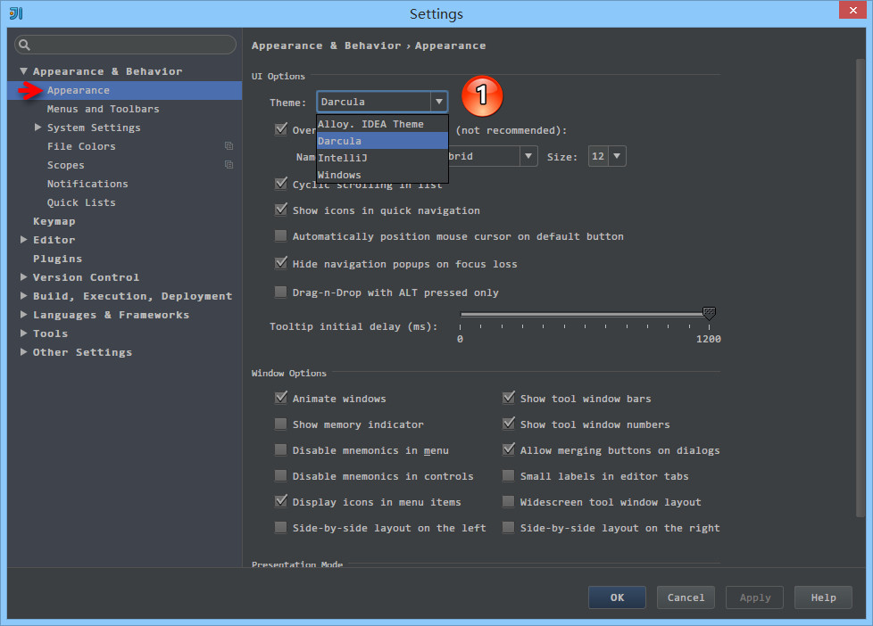
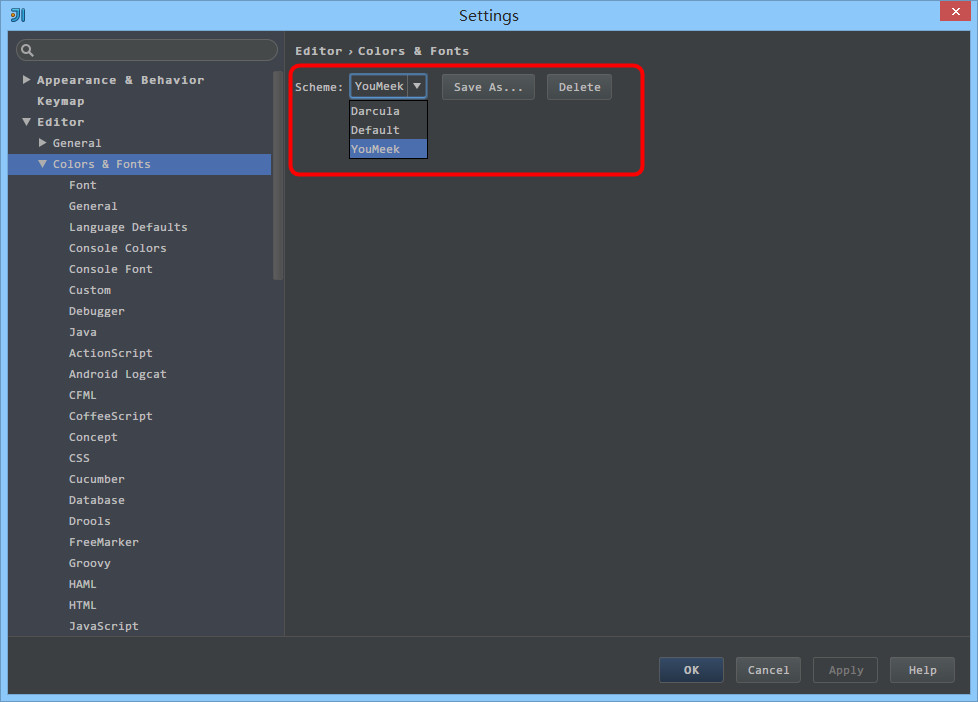
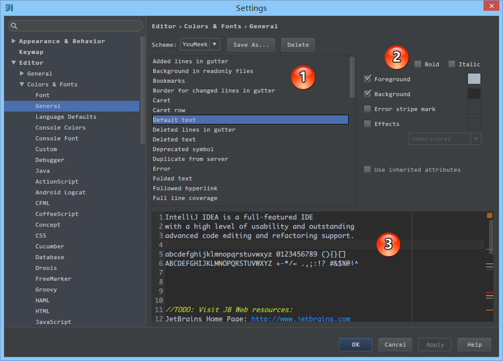
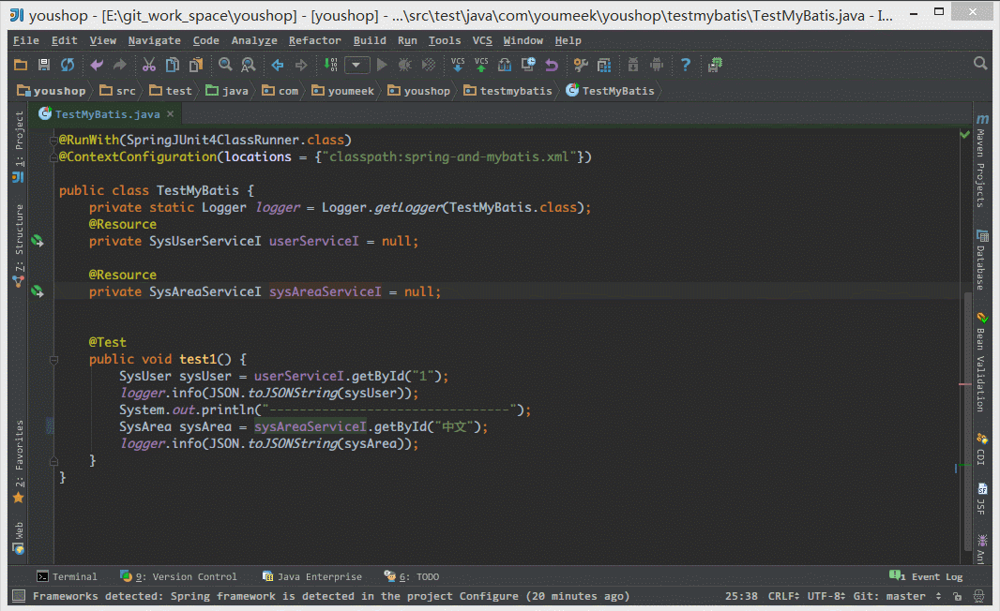

IntelliJ IDEA 主题、字体、编辑区主题、文件编码修改、乱码问题
主题修改

- 上图标注 1 所示为 IntelliJ IDEA 修改主题的地方，在 Windows 系统上 IntelliJ IDEA 默认提供的主题有四套：
Darcula、IntelliJ、Windows、Alloy. IDEA Theme。除了Darcula是黑色主题，其他三套都是以白色为背景的。- 其他操作系统上不一定会也有四套主题的，主题的选择上大家根据自己喜好即可。改变主题需要重启 IntelliJ IDEA 方可看到效果。
字体修改
主题字体修改

- 如上图标注 1 所示，IntelliJ IDEA 主题字体的修改要先勾选
Override default fonts by。默认 IntelliJ IDEA 是不推荐修改的，但是由于字体是有分包含中文和不包含中文之分的，一般使用英文的国家是不需要额外担心乱码问题的，而我们需要。- 字体的审美上每个人不一样，但是如上一段说的，这里的字体修改是需要知道一个前提的，那就是你选择的那个字体必须含有中文，比如微软雅黑和宋体这类是包含中文的，而
Courier New和Monaco这类只是单纯的英文字体。- 如果你选择的字体不包含中文，那可能会在很多位置上出现类似
口口口口口这样的乱码问题，比如文件名含有中文、字体是中文名字的都会变成口口口口口。- 在修改 IntelliJ IDEA 的主题字体的时候，不建议把字体调成很大，因为很多人遇到这样一种情况：显示器分辨率低，主题字体又大，在 IntelliJ IDEA 的某些操作的工具菜单、右键菜单选项中部分选项超出了分辨率显示范围，没办法被选中。当然了，如果你一定要把字体改大，又不用大分辨率显示器，那可以通过 IntelliJ IDEA 的
Menus and Toolbars删除部分你认为用不到的菜单，但是一般不建议这样做。- 还需要特别注意的时候，如果你是开着 IntelliJ IDEA 的时候，新装了一个字体的话，那必须重启IntelliJ IDEA 之后才能在下拉列表找到新装的字体。
代码编辑字体修改

- 如上图标注 1 所示，默认 IntelliJ IDEA 是不能直接在默认的代码模板上修改字体的，需要先
Save As一份出来，然后才可以修改。这种设计在 IntelliJ IDEA 其他很多设置也是如此的，所以如果你还看到类似有Copy、Save As这类选项的按钮就要想到是此设计思想。- 如上图标注 2 所示，勾选的
Show only monospaced fonts表示筛选显示系统上的等宽字体。由于 Windows 系统上等宽字体并不多，勾选此选项出现的下拉字体可选择就很少。取消勾选之后，就可以显示系统上所有已安装的字体。- 如上图标注 3 所示，其中编码字体有第一字体（
Primary font） 和 第二字体（Secondary font）之分。当有些字符在第一字体支持不了的时候，会去使用第二字体进行支持。- 我个人习惯上：英文字体使用
Monaco，由于此字体不支持中文，所以我把这个设置为第一字体，第二字体使用Yahei Consolas Hybrid进行支持，该字体含有中文。这两个字体都不是系统自带的，需要自行下载安装。- 如果你的第一字体不包含中文的话，第二字体包含中文，那在有些地方也还是会出现
口口口口口这类问题，比如Ctrl + Shift + N进行查找文件的时候，如果你输入中文也会变成口口口口口，我个人文件名为中文的不多，所以就容忍了这种情况。如果你不愿意容忍这种情况，那还是回到最开始的要求：第一字体包含中文。
控制台输出字体修改

- 如上图为控制台输出内容字体修改，有很多 IntelliJ IDEA 新人在做输出的时候出现乱码原因就是因为没有在这里进行设置。
- 控制台输出字体 修改的原理跟 代码编辑字体修改 是一样的，所以这里不进行讲解。
编辑区主题修改
编辑区主题介绍

- 编辑区主题，也就是代码书写区的主题修改。基本上大家在
General上都有对此进行小修小改，我下面也主要介绍下我个人在General上常修改的一些地方，其他特性的颜色修改我一般默认，但是修改方法原理一样。- 如上图红圈下拉所示，展示的是我当前电脑可以选择的编辑区主题。
- 对于编辑区的主题，也有人制作成模板在网络上提供下载。这里主要介绍两个站点：
- http://color-themes.com/?view=index，主要提供 jar 文件下载。
- http://www.phpstorm-themes.com/，主要提供 xml 和 icl 文件下载。
- 对应文件如何安装请查看网站对应的
Help页面，都有详细说明的。
编辑区主题细节修改

- 上图标注 1 为可修改的通用细节内容
- 上图标注 2 为可修改属性，其中并不是每个细节都可以修改所有属性的。比如细节：
Default text是可以勾选Bold，而Caret row则是无法勾选Bold，因为只有文本才有加粗的属性需求。- 上图标注 3 为修改后的预览区，预览区是实时动态展示的。
- 在
General区，我常修改的有：
Default text，指的是默认代码文本，我一般会修改其Background属性。Caret row，指的是光标所在行，我一般会修改其Background属性。Vertical indent guide，指的是垂直缩进线，我一般会修改其Foreground属性。Identifier under caret，指的是光标所在位置的相同标识符呈现什么效果，我一般会修改其Background属性。Text search result，指的是在查找模式下，匹配字符的样式，我一般会修改其Background属性。
文件编码修改

- 上图标注 1 所示，IDE 的编码默认是
UTF-8，Project Encoding虽然默认是GBK，但是一般我都建议修改为UTF-8。- 上图标注 2 所示，IntelliJ IDEA 可以对
Properties文件进行专门的编码设置，一般也建议改为UTF-8，其中有一个重点就是属性Transparent native-to-ascii conversion，- 上图标注 3 所示，对于
Properties文件，重要属性Transparent native-to-ascii conversion主要用于转换ascii，一般都要勾选，不然Properties文件中的注释显示的都不会是中文。- 上图标注 4 所示，IntelliJ IDEA 除了支持对整个 Project 设置编码之外，还支持对目录、文件进行编码设置。如果你要对目录进行编码设置的话，可能会出现需要
Convert编码的弹出操作选择，强烈建议 在转换之前做好文件备份，不然可能出现转换过程变成乱码，无法还原。

- 如上图演示，对单独文件的编码修改还可以点击右下角的编码设置区。如果代码内容中包含中文，则会弹出演示中的操作选择。
Reload表示使用新编码重新加载，新编码不会保存到文件中，重新打开此文件，旧编码是什么依旧还是什么。Convert表示使用新编码进行转换，新编码会保存到文件中，重新打开此文件，新编码是什么则是什么。- 含有中文的代码文件，
Convert之后可能会使中文变成乱码，所以在转换成请做好备份，不然可能出现转换过程变成乱码，无法还原。
由于编码问题引起的编译错误
- 编译报错：
找不到符号、未结束的字符串文字等的解决办法：
- 由于 UTF-8 编码文件有分
有BOM和无BOM之分，默认情况下 IntelliJ IDEA 使用的编译器是javac，而此编译只能编译无BOM的文件，有很多 Eclipse 用户在使用 IntelliJ IDEA 开发 Eclipse 项目的时候常常会遇到此问题。主要是因为 Eclipse 的编译器是Eclipse，此编译器支持有BOM的文件编译。故，解决办法是对于此文件进行 BOM 去除。- 批量去除 BOM，你可以 Google：
批量去除 BOM、批量转换无 BOM等关键字，网络上已有提供各种方案。- 除了通过去除 BOM 还有设置 IntelliJ IDEA 的编译器为
Eclipse，但是一般不建议这样做。- 如果上述问题都无法解决，而且你也确认 IntelliJ IDEA 各个配置编码的地方都是
UTF-8，报错文件编码也是是UTF-8 无 BOM的话，那还有一种可能也会出现这种情况：项目配置文件有问题。项目编码的配置文件在：/项目目录/.idea/encodings.xml。如果你会修改此文件可以进行修改，如果不会，那就删除掉.idea整个目录，重启 IntelliJ IDEA 重新配置这个项目即可。
Tomcat 控制台输出乱码
- 如果你的 Tomcat 控制台输出乱码，并且你已经保证了本文上面的控制台字体设置你设置的字体包含中文，那你还可以尝试下在 Tomcat 的 VM 参数上加上：
-Dfile.encoding=UTF-8 - 如果你是 Mac 系统，很有可能是需要的。
编程字体推荐
- 下载地址：http://pan.baidu.com/s/1kVoF32R
- Microsoft YaHei Consolas
- Microsoft YaHei Mono